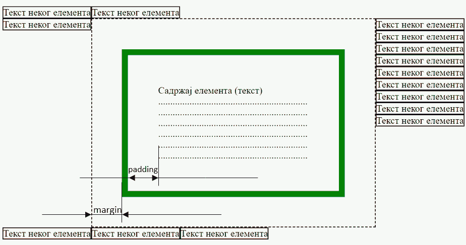
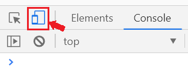

CSS својства¶
CSS својства описују како је потребно приказати елементе у HTML документима. Својства елемената могу бити величина или боја фонтова, димензије (висина и ширина) и слично. Својства се дефинишу тако што се наведе назив својства, затим знак :, а онда иза њега вредност коју треба да има то својство елемента.
својство: вредност
Овако, на пример, изгледа CSS дефиниција којом се задаје величина слова од 12 пиксела:
font-size: 12px
Постоји велики број својстава које можете поставити, а у овој лекцији ће бити објашњена нека најбитнија својства.
Често коришћенe вредности CSS својстава¶
Вредности које се додељују својствима су најчешће неке специјалне речи. Скуп речи које се могу доделити својству као вредност зависи од самог својства, али неке вредности, као што су димензије и боје се често на исти начин дефинишу и додељују различитим својствима и зато ће овде бити укратко објашњене.
Вредности димензија су нумеричке вредности које се изражавају у пикселима (нпр. 12px), типографским тачкама (нпр. 10pt), центиметрима (нпр. 20cm) и слично (више информација се може наћи на
страници о јединицама мере сајта W3CSchools). Некада се користи јединица em за релативну величину слова и која зависи од подразумеване величине слова. Нпр. 1.2em значи да ће величина бити увећана за 20% (или 1.2 пута, што је исто) у односу на вредност која би била употребљена без навођења ове величине. На пример, ако је реч о фонту, 1.2em значи фонт за 20% већи од тренутног фонта.
Вредности боја се могу дефинисати на више начина (више информација се може наћи на страници о бојама сајта W3CSchools):
Помоћу имена боја (нпр.
red,blue,green)Помоћу хексадецималних вредности боја, као на пример
#ff6347. Прве две хексадецималне цифре означавају количину црвене, друге две количину зелене, а треће две количину плаве. Тако на пример,#ff0000означава црвену, а#ffffffбелу боју.Помоћу вредности црвене, зелене и плаве нијансе без дефинисаног фактора непрозирности у облику
rgb(201, 76, 72)(црвена: 201, зелена: 76, плава: 72) или са фактором непрозирностиrgba(201, 76, 72, 0.3)(0 за потптуно прозирну, тј. транспарентну боју, 1 за потпуно непрозирну).Помоћу hsl или hsla вредности. Прва три броја задају нијансу боје, засићеност и осветљеност, а четврти (код формата hsla) непрозирност, као код rgba формата.
Својства текста¶
CSS правила нам омогућавају да опишемо изглед текста у HTML елементима. Нека од најчешће коришћених својстава текста су:
font-size– које дефинише величину фонтова (најчешће у пикселима).color– које дефинише боју фонтова (нпр.red,blue,green).font-family– која дефинише тзв. фамилију фонтова која представља стил којим ће бити приказан текст.
Напомена: за елементе који садрже текст могу се подесити и друга својства, као што је background-color – које дефинише која ће бити боја позадине елемента у коме се налази текст (нпр. red, blue, green).
Дефиниција изгледа слова која ће се применити на сваки параграф веб стране може се написати овако:
p {
font-size: 12px;
background-color: yellow;
color: red;
font-family: "Times New Roman";
}
Кад год претраживач наиђе на параграф текста који је представљен елементом <p> у HTML документу, текст тог параграфа ће приказати на жутој позадини црвеним словима величине 12 пиксела из фамилије Times New Roman.
У многим напредним програмима за процесирање текста као што је Microsoft Word сте вероватно видели да постоје такозване фамилије фонтова, којима се дефинише на који начин треба приказати слова. Пример фамилије фонтова је „Times New Roman”, који је коришћен у Британским новинама „The Times”. У случају да желите да текст на вашој веб страни изгледа као текст у овим новинама, онда би требало да одговарајућим HTML елементима доделите ову фамилију користећи CSS атрибут font-family. Може се задати опште (генеричко) име фамилије или тачно (специфично) име фамилије.
Генеричко име фамилије описује опште карактеристике слова као што су писана слова (
Cursive), слова са украсима-стопицама на ивицама (Serif), без украса (Sans-Serif), слова исте ширине (Monospaced), и слично.Тачно име фамилије прецизно означава како треба приказати слова. Примери могу да буду
Times New Romanкоји је специјална врстаSerifфамилије,Arialкоји је специјална врстаSans-Serifфамилије,Courier Newкоји је специјална врстаMonospaceфамилије.
Као вредност CSS атрибута font-family се наводи листа више фонтова или њихових фамилија, а биће примењена прва препозната фамилија у редоследу навођења. Нека је на пример, наведено:
p {
font-family: "Times New Roman", Times, serif;
}
Ако прегледач подржава и има дефиниције изгледа фамилије фонтова Times New Roman, ова фамилија ће бити коришћена да се прикажу слова у пасусу. Ако прегледач не препознаје ову фамилију, покушаће да примени Times фамилију. Ако ни ово не успе, онда ће приказати слова неким подразумеваним типом из генеричке Serif фамилије.
Својства која дефинишу границе елемента¶
CSS стилови нам омогућавају да за сваки HTML елемент дефинишемо његове димензије, растојање које треба направити између садржаја тог елемента и околних елемената и слично. HTML елементи имају у себи садржај (илустрације ради, претпоставимо да је садржај обичан текст) око кога се налази невидљиви оквир, који представља границу тог елемента. CSS стилови нам омогућавају да помоћу следећих својстава дефинишемо положај границе елемента у односу на садржај унутар елемента и у односу на околне елементе:
padding- величина подручја унутар елемента, у коме садржај елемента не може да се појави. Ово својство ће одгурнути садржај елемента од ивице ка унутрашњости.border- ивица елемента. Овим својством можете да контролишете стил, ширину и боју ивице.margin– величина подручја ван елемента, у коме не могу да се појаве други елементи и њихови делови.background– дефинише како ће изгледати позадина садржаја елемента. У оквиру овог својства се може дефинисати боја позадине, прозирност (транспарентност), слика која ће се поставити у позадини и слично. Ово се постиже помоћу CSS својстава као што суbackground-color,background-imageитд. Више информација о подешавању позадина елемената можете пронаћи на W3CSchools сајту.
На следећој слици је приказано шта би елемент који има подешена својства урадио са својим садржајем и неким околним елементима:
{kind=link}
Својство border може, на пример, да дефинише да је оквир елемента зелене боје и дебљине 5 пиксела. Садржај елемента неће моћи да се постави од ивице до ивице, него ће бити одмакнут од ивица за вредност која је постављена у својству padding. Елементи који се налазе око овог елемента неће моћи да се поставе уз ивицу него ће бити одмакнути за вредност која је постављена у својству margin.
У следећем примеру је приказано као се подешава оквир око елемента:
p {
border-size: 5px;
border-style: solid;
border-color: green;
padding: 50px;
margin: 20px;
}
У овом примеру су дефинисане величина и боја ивице елемената помоћу CSS својстава border-size, border-color. Својство border-style је слично стиловима линија на које сте наилазили у процесорима текста и описује да ли ивицу треба исцртати као пуну (solid), испрекидану (dashed), тачкасту (dotted) и слично. Пронађите остале врсте линија и испробајте их на W3CSchools сајту.
У неким случајевима ћете наићи на компактнији облик дефиниције CSS стила, у коме се својству border додељују све вредности:
p {
border: 5px solid green;
}
CSS стил из претходног примера се примењује на све ивице оквира (горњу, доњу и бочне). Међутим, CSS језик дозвољава и финију контролу и омогућава да поставимо посебне вредности за сваку ивицу оквира:
p {
margin-top: 100px;
margin-bottom: 100px;
margin-right: 150px;
margin-left: 80px;
border-top-style: dotted;
border-right-style: solid;
border-bottom-style: dotted;
border-left-style: solid;
padding-top: 50px;
padding-right: 30px;
padding-bottom: 50px;
padding-left: 80px;
}
Димензије елемената¶
Један од изазова у дизајнирању веб страна је да се постигне да иста страна добро изгледа на екранима различитих величина (од паметних телефона до монитора високе резолуције). Помоћу CSS стилова можемо да постигнемо значајну флексибилност у изгледу стране, тако што подесимо својства описана у наставку, која се односе на димензије елемената. При употреби ових својстава је важно је да се проверава како веб страна изгледа у прозорима различите величине. Брз и једеноставан начин да симулирамо гледање стране на уређајима са различитом резолуцијом је да мењамо величину прозора прегледача. Кликом на икону са два екрана у прозору са алатима за развој приказану на слици испод, добијамо прецизну контролу величине екрана симулираног циљног уређаја.
{kind=link}
Да бисмо разумели како CSS стилови омогућавају да се дефинишу димензије HTML елемената, треба прво знати да HTML елементи могу грубо да се поделе на:
blockелементе као што су<p>,<table>,<ul>,<ol>, или<div>, који заузимају сву ширину која им је на располагању. Подразумевано понашање ових елемената је да се увек позиционирају у новом реду, ширина им је највећа могућа у надређеном елементу, а висина им зависи од количине садржаја.inlineелементе који заузимају најмању могућу ширину која им је потребна. Подразумевано понашање им је да се поставе у исти ред као и осталиinlineелементи, а ширина им зависи од садржаја. Примери оваквих елемената су<a>,<img>и<span>.
Прегледач ће, у зависности од типа елемента, сам одлучити да ли ће за његов приказ користити најмању довољну ширину или ће користити пуну ширину од једне до друге ивице надређеног елемента. HTML елементима се може експлицитно дефинисати ширина помоћу CSS својстава. Најбитнија CSS својства која се могу искористити су:
min-width,max-width,widthкоја дефинишу минималну, максималну и експлицитно задату ширину елемента. Елементу ће бити промењена висина како би се садржај уклопио у задату ширину. У случају да ширина није задата, а природна ширина елемента није мања од минимума нити већа од максимума, ова својства немају никаквог ефекта.min-height,max-height,heightкоја дефинишу минималну, максималну и експлицитно задату висину елемента. Ако садржај елемента не може да се прикаже у елементу, он ће ипак бити приказан, али ван елемента (висина елемента се неће приказати). Ово је подразумевано понашање које се може променити коришћењем својстваoverflow. У случају да висина није задата, а природна висина елемента није мања од минимума нити већа од максимума, ова својства немају никаквог ефекта.
Висина и ширина се односе на садржај унутар елемената не рачунајући дебљину ивице (border-size) и подручје padding. Ако желимо да се висина и ширина односе и на ова подручја, потребно је додати дефиницију box-sizing: border-box.
Својство overflow дефинише шта треба урадити у случају да садржај елемента не може да се смести у задате димензије. Подразумевано понашање је да се ипак прикаже садржај, али ван елемента. Као алтернатива, вишак садржаја се може сакрити ако се ово својство постави на вредност hidden, а уз то се постављањем вредности на scroll омогућава читаоцу да скрол траком бира видљиви део текста.
На W3CSchools сајту пронађите више информација о моделу оквира и о димензијама.